Python Finance Calculations
In this post, I will explain the methods of measuring risk in finance. One of the widely used concepts to measue the risk of an asset is the Sharpe Ratio. I have implemented a code in Python to compute the Sharpe Ratio for some assets.
from pandas_datareader import data # You will need to run "pip install pandas_datareader"
import holidays # You will need to run "pip install holidays"
import datetime
import numpy as np
import pandas as pd
import matplotlib.pyplot as plt
from pandas.plotting import register_matplotlib_converters
register_matplotlib_converters()
pd.set_option('display.max_columns', None)
pd.set_option('display.max_rows', None)Useful resources:
https://readthedocs.org/projects/pandas-datareader/downloads/pdf/latest/
https://www.investopedia.com/terms/c/consumerpriceindex.asp
https://www.investopedia.com/insights/understanding-consumer-confidence-index/
https://fred.stlouisfed.org/series
ONE_DAY = datetime.timedelta(days=1)
HOLIDAYS_US = holidays.US()
def previous_business_day(specific_date):
previous_day = specific_date
while previous_day.weekday() in holidays.WEEKEND or previous_day in HOLIDAYS_US:
previous_day -= ONE_DAY
return previous_day
def next_business_day(specific_date):
next_day = specific_date
while next_day.weekday() in holidays.WEEKEND or next_day in HOLIDAYS_US:
next_day += ONE_DAY
return next_daydef get_historical_data(share, start_date='2019-01-01', end_date='2020-01-01', source='yahoo'):
try:
panel_data = data.DataReader(share, source, start_date, end_date)
except:
panel_data = pd.DataFrame()
return panel_datadef compute_average_annual_return(share, start_date='2019-01-02', end_date='2019-12-31', source='yahoo'):
panel_data = get_historical_data(share, start_date, end_date, source)
if panel_data.empty:
return None, None, None, None, None
adj_close = panel_data['Adj Close']
start_date = datetime.datetime.strptime(start_date, '%Y-%m-%d')
end_date = datetime.datetime.strptime(end_date, '%Y-%m-%d')
while start_date.strftime('%Y-%m-%d') not in adj_close.index:
start_date = next_business_day(start_date)
while end_date.strftime('%Y-%m-%d') not in adj_close.index:
end_date = previous_business_day(end_date)
delta = end_date - start_date
years = delta.days / 365
start_price = adj_close.loc[start_date.strftime('%Y-%m-%d')]
end_price = adj_close.loc[end_date.strftime('%Y-%m-%d')]
return_value = (end_price/start_price)**(1/years) - 1
return round(return_value, 4), start_date, end_date, delta, yearsdef compute_daily_return_std_per_year(share, start_date='2019-01-02', end_date='2020-01-02', source='yahoo'):
panel_data = get_historical_data(share, start_date, end_date, source)
if panel_data.empty:
return None
last_day_price = None
daily_returns = []
for index, row in panel_data.iterrows():
if last_day_price:
daily_returns.append(row['Adj Close']/last_day_price - 1)
last_day_price = row['Adj Close']
return round(np.std(daily_returns)*np.sqrt(252), 4)def compute_sharpe(share, start_date='2019-01-02', end_date='2020-01-02', source='yahoo'):
avg, _, _, _, _ = compute_average_annual_return(share, start_date, end_date, source)
std = compute_daily_return_std_per_year(share, start_date, end_date, source)
if not avg or not std:
return
return round(avg/std, 4)SP_500 = pd.read_excel('SP_500.xlsx', index_col=0)
SP_500_symbol_list = SP_500.index.to_list()[:-2]
iTickers = {}
iTickers["SPY"] = "SPDR S&P 500 ETF Trust"
iTickers["VOO"] = "Vanguard S&P 500 ETF"
iTickers["VTI"] = "Vanguard Total Stock Market ETF"
iTickers["BRK-B"] = "Berkshire Hathaway Inc."
iTickers["AAPL"] = "Apple Inc."
iTickers["BAC"] = "Bank of America"
iTickers["MSFT"] = "Microsoft"
iTickers["IVV"] = "iShares Core S&P 500 ETF"
iTickers["NFLX"] = "Netflix"for symb in SP_500_symbol_list:
print("---------------\n", symb)
sharpe_ratio = compute_sharpe(symb)
print(SP_500.loc[symb]['Name'], sharpe_ratio)plt.figure(figsize=(16,8))
start_date='2000-01-31'
for symb in iTickers:
print(iTickers[symb])
daa = get_historical_data(symb, start_date=start_date)
sharpe_ratio = compute_sharpe(symb)
#print(SP_500.loc[symb]['Name'], sharpe_ratio)
print(iTickers[symb], sharpe_ratio)
plt.plot(daa['Adj Close'])
plt.grid(color='g', linestyle='-.', linewidth=0.5)
plt.legend([iTickers[sym] for sym in iTickers])
plt.savefig('well-known-tickers.png')SPDR S&P 500 ETF Trust
SPDR S&P 500 ETF Trust 2.5004
Vanguard S&P 500 ETF
Vanguard S&P 500 ETF 2.5269
Vanguard Total Stock Market ETF
Vanguard Total Stock Market ETF 2.4393
Berkshire Hathaway Inc.
Berkshire Hathaway Inc. 0.7833
Apple Inc.
Apple Inc. 3.42
Bank of America
Bank of America 1.9287
Microsoft
Microsoft 2.9596
iShares Core S&P 500 ETF
iShares Core S&P 500 ETF 2.5012
Netflix
Netflix 0.6069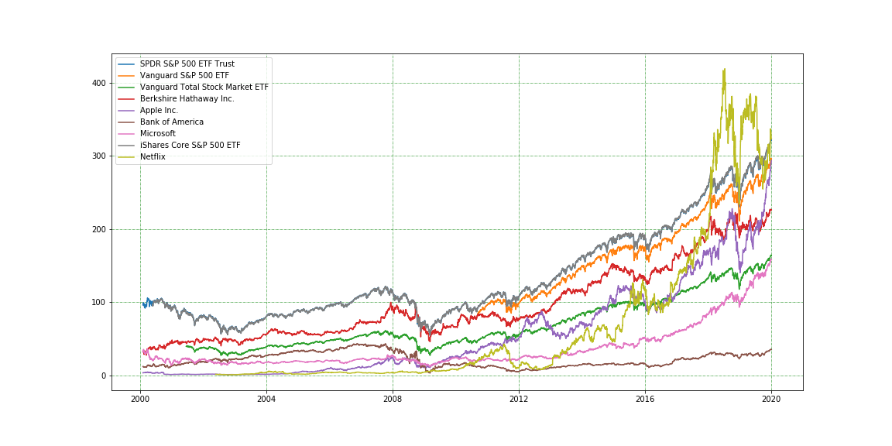
plt.figure(figsize=(16,6))
start_date='2010-01-02'
end_date='2020-01-07'
for symb in ['BRK-B','SPY']:
daa = get_historical_data(symb, start_date=start_date, end_date=end_date)
plt.plot(daa['Adj Close'])
plt.grid(color='g', linestyle='-.', linewidth=0.5)
plt.legend(['BRK-B','SPY'])
plt.savefig('BRK_vs_SPY.png')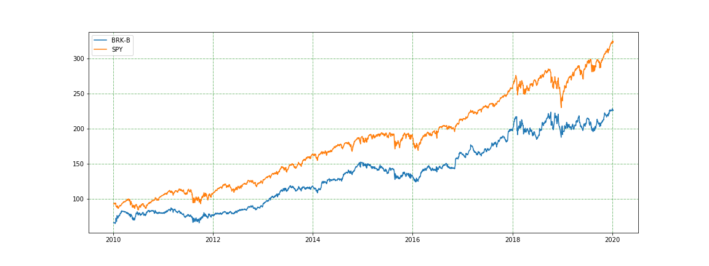
def plot_stock_price(stock, start_date='2019-01-02', end_date='2019-12-31', source='yahoo'):
plt.figure(figsize=(16,6))
daa = get_historical_data(stock, start_date=start_date, end_date=end_date, source=source)
sharpe_ratio = compute_sharpe(stock)
plt.plot(daa['Adj Close'])
plt.grid(color='g', linestyle='-.', linewidth=0.5)
plt.legend([stock])
plt.savefig('{}_{}_{}.png'.format(stock, start_date, end_date))plot_stock_price('GOOG', start_date='2007-01-02', end_date='2010-01-02')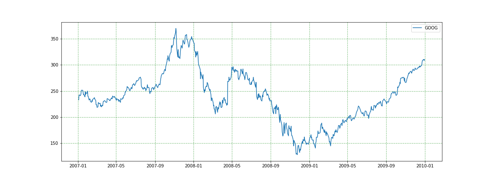 AT&T
plot_stock_price('T', start_date='1980-01-01', end_date='2020-01-01')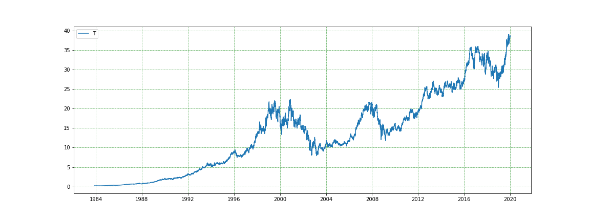
plot_stock_price('VTIP', start_date='1990-01-01', end_date='2020-01-01')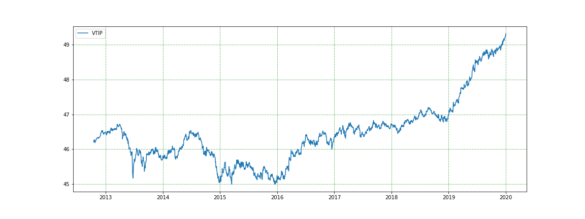 Vanguard 500 Index Fund Admiral Shares
plot_stock_price('VFIAX', start_date='1990-01-01', end_date='2020-01-01')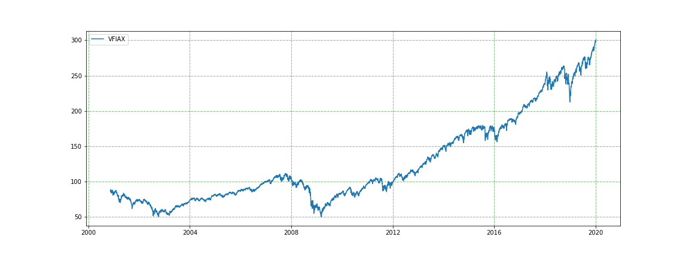 iShares 20+ Year Treasury Bond ETF (TLT)
plot_stock_price('TLT', start_date='1900-01-01', end_date='2020-01-01')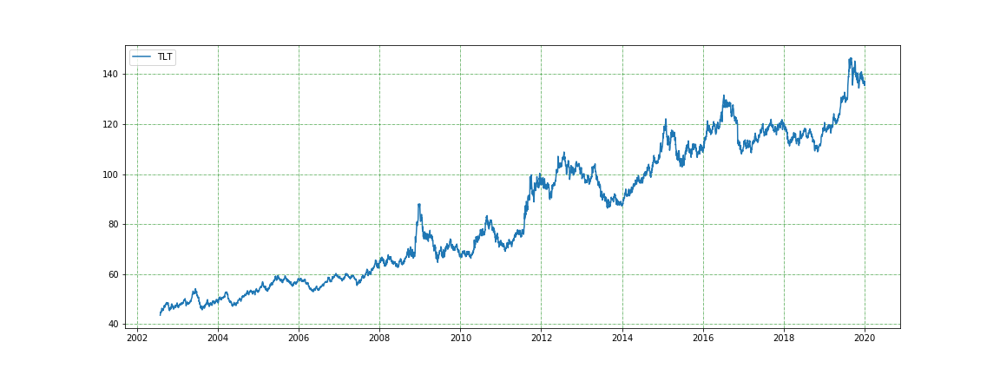 13 Week treasury bill
plot_stock_price('^IRX', start_date='1900-01-01', end_date='2020-01-01')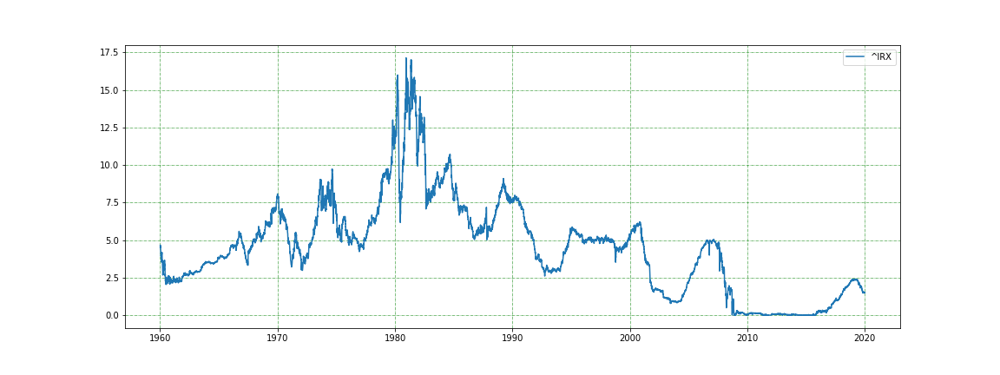 30 Year Treasury bill
plot_stock_price('^TYX', start_date='2000-01-01', end_date='2020-01-01')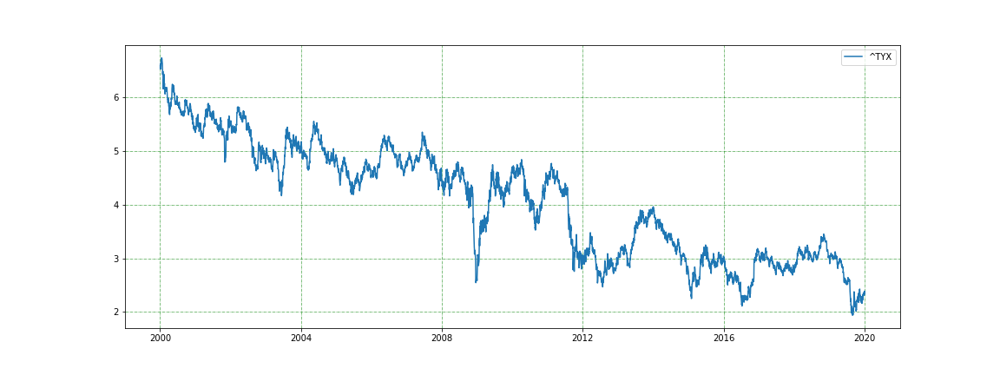 Vanguard Target Retirement 2045 Fund Investor Shares
plot_stock_price('VTIVX', start_date='2000-01-01', end_date='2020-01-01')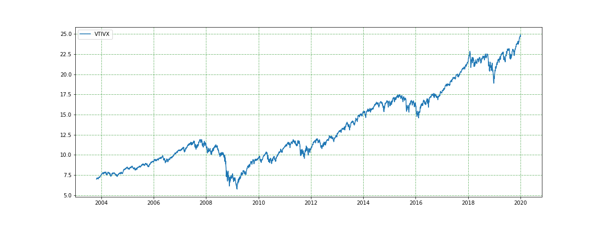
def compute_avg_annual_return_between_2_periods(shares, start_date='2000-01-02', end_date='2019-12-31', source='yahoo'):
shares_data = get_historical_data(shares, start_date=start_date, end_date=end_date, source=source)
adj_close = shares_data['Adj Close']
start_date = datetime.datetime.strptime(start_date, '%Y-%m-%d')
end_date = datetime.datetime.strptime(end_date, '%Y-%m-%d')
while start_date.strftime('%Y-%m-%d') not in adj_close.index:
start_date = next_business_day(start_date)
while end_date.strftime('%Y-%m-%d') not in adj_close.index:
end_date = previous_business_day(end_date)
start_prices = adj_close.loc[start_date.strftime('%Y-%m-%d')]
end_prices = adj_close.loc[end_date.strftime('%Y-%m-%d')]
#print(end_prices, start_prices)
return (end_prices/start_prices)**(1/(end_date.year - start_date.year)) - 1SP500_rate_of_return_all = compute_avg_annual_return_between_2_periods(SP_500_symbol_list)
SP500_rate_of_return = {x:round(SP500_rate_of_return_all.loc[x],2) for x in SP500_rate_of_return_all.index \
if not pd.isnull(SP500_rate_of_return_all.loc[x])}SP500_rate_of_return_clean = {k: v for k, v in sorted(SP500_rate_of_return.items(), key=lambda item: item[1])}compute_avg_annual_return_between_2_periods('BRK-B')0.10278063728967202
plot_stock_price('NVDA', start_date='2000-01-02', end_date='2019-12-31')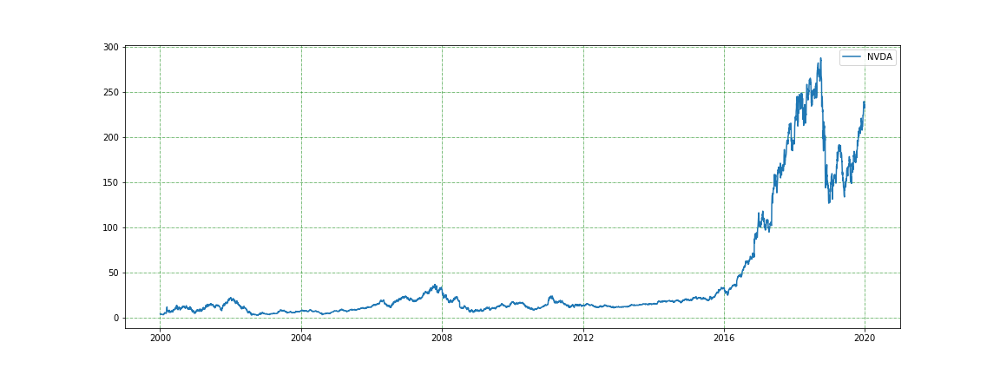
Overall economic indicators
def plot_us_gdp(start_date = '1900-01-01', end_date = '2020-01-01'):
plt.figure(figsize=(16,6))
gdp_data = get_historical_data('GDP', start_date = start_date, end_date = end_date, source = 'fred')
plt.plot(gdp_data)
plt.grid(color='g', linestyle='-.', linewidth=0.5)
plt.legend(['US GDP'])
plt.savefig('us_gdp.png')def plot_us_inflation(start_date='1940-01-01', end_date='2020-01-01', index ='CPILFESL'):
CPI = get_historical_data(index, start_date = start_date, end_date = end_date, source = 'fred')
CPI['CPI_Diff_monthly'] = CPI[index].diff()
CPI['CPI_Diff_yearly'] = CPI[index].diff(12)
CPI['CPI_monthly_inflation_rate'] = (CPI['CPI_Diff_monthly']/CPI[index])*100
CPI['CPI_yearly_inflation_rate_pp'] = (CPI['CPI_Diff_yearly']/CPI[index])*100
plt.figure(figsize=(16,6))
plt.plot(CPI['CPI_monthly_inflation_rate'])
plt.plot(CPI['CPI_yearly_inflation_rate_pp'])
plt.grid(color='g', linestyle='-.', linewidth=0.5)
plt.legend(['US monthly inflation rate', 'US yearly point to point inflation rate'])
plt.savefig('us_inflation_data_{}.png'.format(index))
return CPIdef plot_index(index, start_date = '2010-01-02', end_date = '2020-01-02', source = 'fred'):
indx = get_historical_data(index, start_date, end_date, source)
plt.figure(figsize=(16,6))
plt.plot(indx)
plt.grid(color='g', linestyle='-.', linewidth=0.5)
index_meaning = {'DGS30': '30-Year Treasury Constant Maturity Rate',
'DGS20': '20-Year Treasury Constant Maturity Rate',
'DGS10': '10-Year Treasury Constant Maturity Rate',
'DGS7': '7-Year Treasury Constant Maturity Rate',
'DGS5': '5-Year Treasury Constant Maturity Rate',
'DGS3': '3-Year Treasury Constant Maturity Rate',
'DGS2': '2-Year Treasury Constant Maturity Rate',
'DGS1': '1-Year Treasury Constant Maturity Rate',
'DGS6MO': '6-Month Treasury Constant Maturity Rate',
'DGS3MO': '3-Month Treasury Constant Maturity Rate',
'DGS1MO': '1-Month Treasury Constant Maturity Rate',
'FEDFUNDS': 'US Effective Federal Funds Rate',
'LIBOR': '3-Month London Interbank Offered Rate',
'NIKKEI225': 'Nikkei Stock Average, Nikkei 225',
'UNRATE': 'US Civilian Unemployment Rate',
'GFDEGDQ188S': 'Federal Debt: Total Public Debt as Percent of Gross Domestic Product',
'GDPC1': 'Real Gross Domestic Product percent change',
'A191RL1Q225SBEA': 'Real Gross Domestic Product dollars',
'CPIAUCSL': 'Consumer Price Index for All Urban Consumers: All Items',
'IRLTLT01JPM156N': 'Long-Term Government Bond Yields: 10-year: Japan'
}
plt.legend([index_meaning[index]])
plt.savefig('index_{}_{}_{}.png'.format(index, start_date, end_date))Plotting the yield maturity curve
def plot_yield_curve(specific_date):
next_date = next_business_day(datetime.datetime.strptime(specific_date, '%Y-%m-%d'))
specific_date = next_date.strftime('%Y-%m-%d')
syms = ['DGS1MO', 'DGS3MO', 'DGS6MO', 'DGS1', 'DGS2', 'DGS3', 'DGS5', 'DGS7', 'DGS10', 'DGS20', 'DGS30']
yc = data.DataReader(syms, 'fred', specific_date, specific_date)
names = dict(zip(syms, ['1m', '3m', '6m', '1yr', '2yr', '3yr', '5yr', '7yr', '10yr', '20yr', '30yr']))
yc = yc.rename(columns=names)
plt.figure(figsize=(16,6))
#plt.plot([1, 3, 6, 12, 24, 36, 60, 84, 120, 240, 360], yc.loc[specific_date])
plt.plot(yc.loc[specific_date])
plt.grid(color='g', linestyle='-.', linewidth=0.5)
plt.legend(['US Yield Curve on {}'.format(specific_date)])
plt.savefig('yield_curve_{}.png'.format(specific_date))
return yc.loc[specific_date]yields = plot_yield_curve('2019-02-11')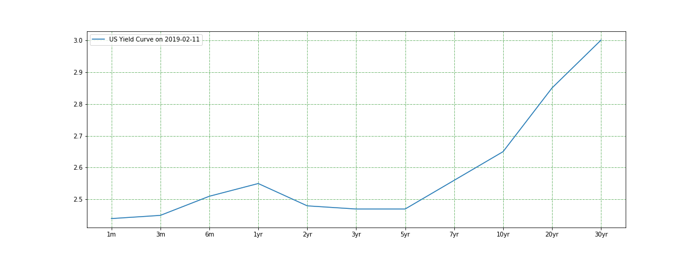
yields = plot_yield_curve('2019-12-11')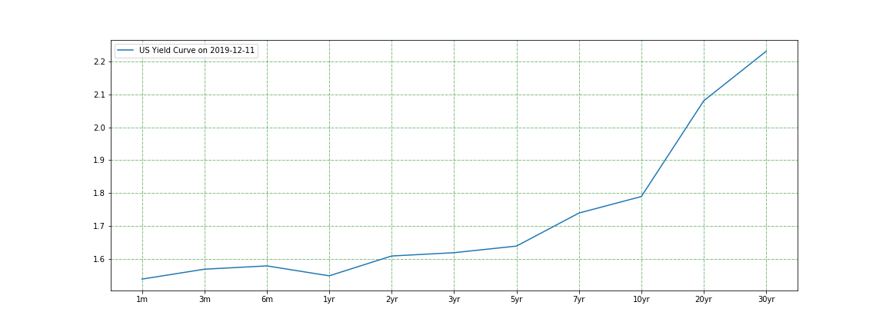
plot_index('DGS6MO')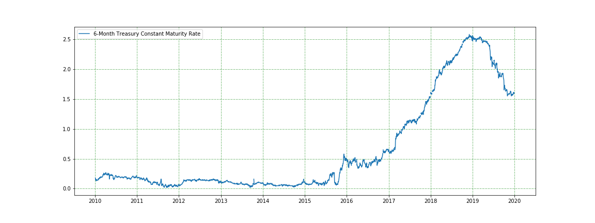
SP-500 index plots over different decades.
plot_stock_price('^GSPC', start_date='1900-01-01', end_date='1960-01-01')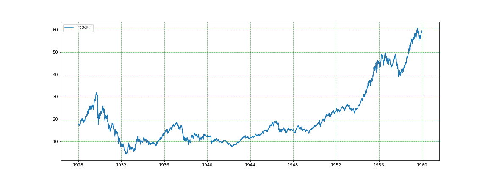
plot_stock_price('^GSPC', start_date='1960-01-01', end_date='1970-01-01')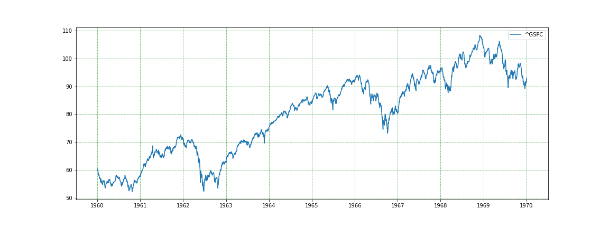
plot_stock_price('^GSPC', start_date='1970-01-01', end_date='1980-01-01')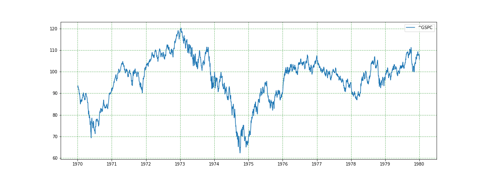
plot_stock_price('^GSPC', start_date='1980-01-01', end_date='1990-01-01')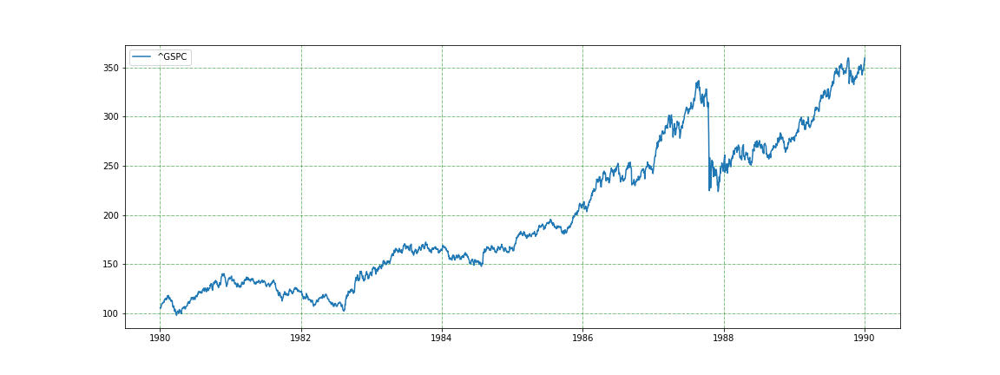
plot_stock_price('^GSPC', start_date='1990-01-01', end_date='2000-01-01')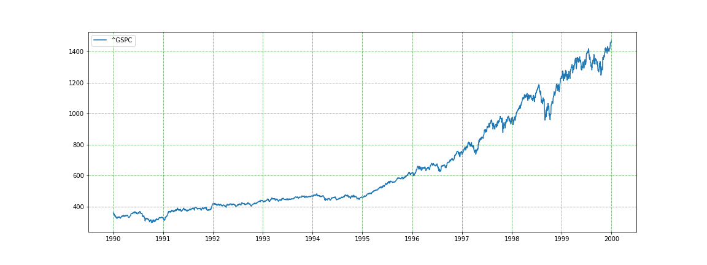
plot_stock_price('^GSPC', start_date='2000-01-01', end_date='2010-01-01')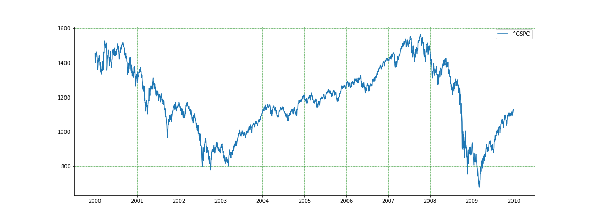
plot_stock_price('^GSPC', start_date='2010-01-01', end_date='2020-01-01')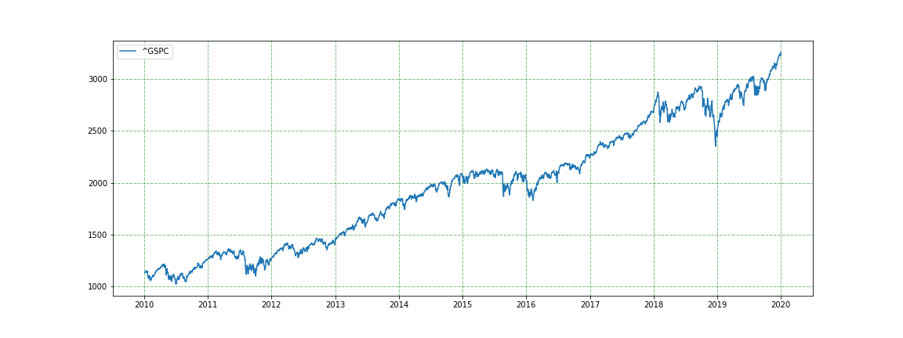
Consumer Price Index plot
plot_stock_price('CPI', start_date='1990-01-01', end_date='2020-01-01')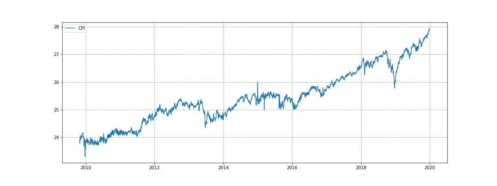
US GDP
gdp = plot_us_gdp()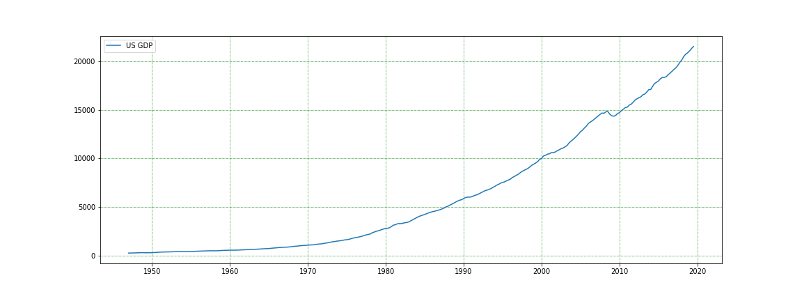
US inflation plots
cpi_u_inflation_data = plot_us_inflation(index = 'CPILFESL')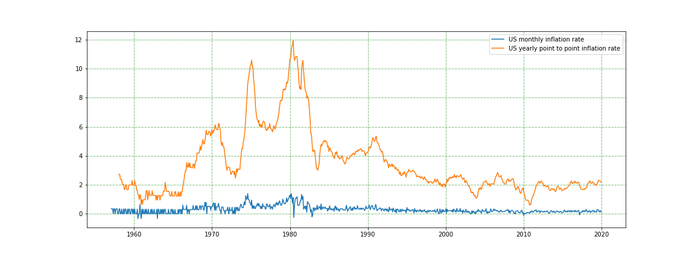
cpi_u_inflation_data = plot_us_inflation(index = 'CPIAUCSL')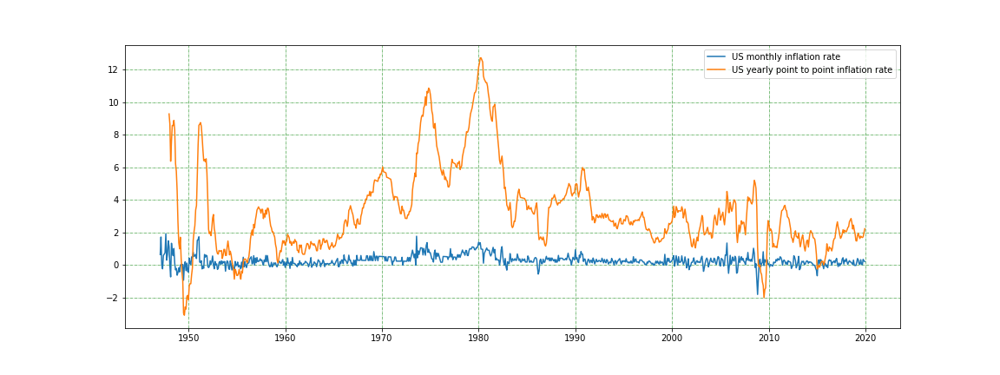
Consumer Confidence Index plot
plot_stock_price('CCI', start_date='1960-01-01', end_date='2020-01-01')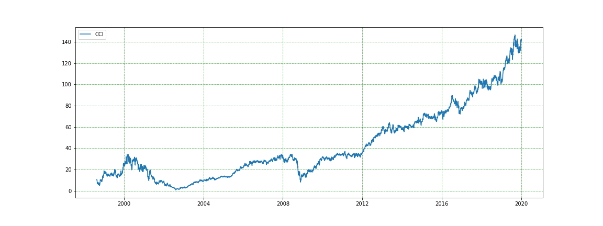
Dow Jones Industrial Average
plot_stock_price('^DJI', start_date='1940-01-01', end_date='1990-01-01')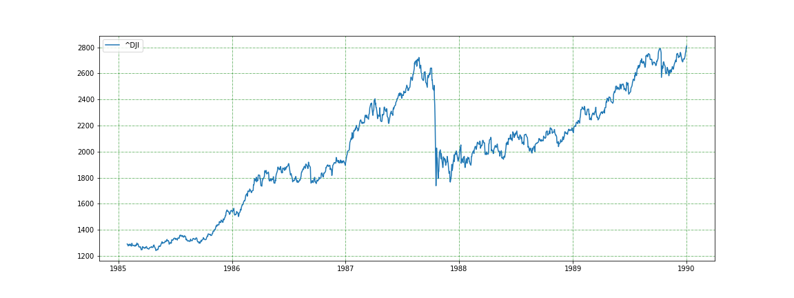
plot_stock_price('^DJI', start_date='1990-01-01', end_date='2020-01-01')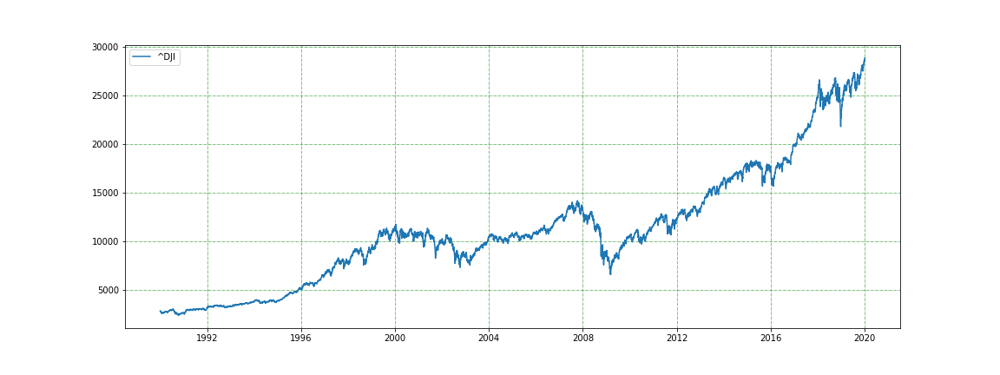
Plot of 10 year treasury bond interest rate
plot_index('DGS10', start_date = '1950-01-02')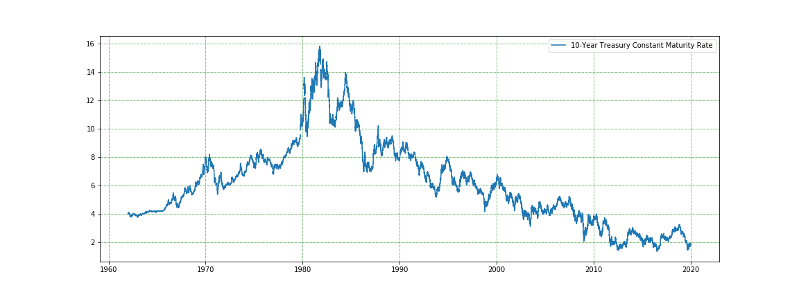
plot_index('DGS10', start_date = '2010-01-02')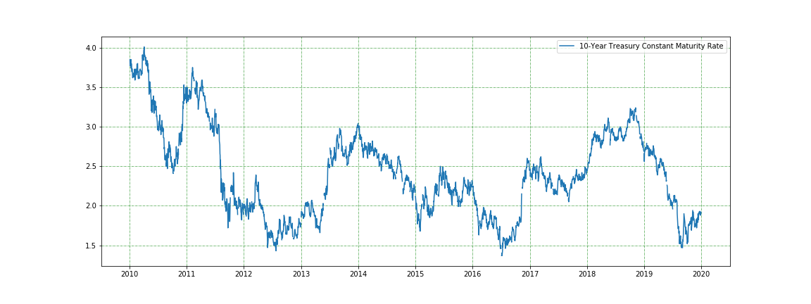
US Effective Federal Funds Rate
plot_index('FEDFUNDS')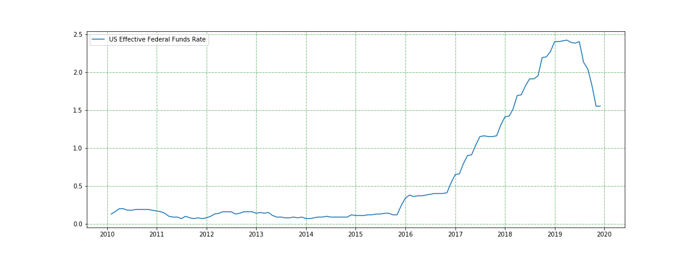
US unemployment rate
plot_index('UNRATE', start_date = '1910-01-02')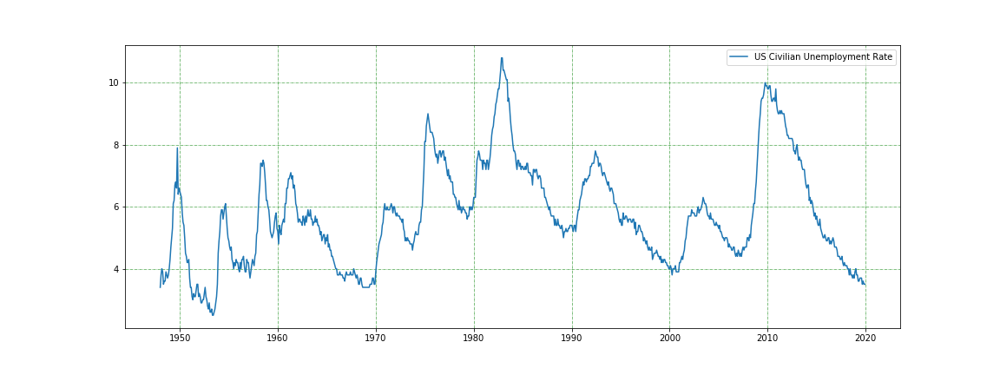
NIKKEI Index
plot_index('NIKKEI225')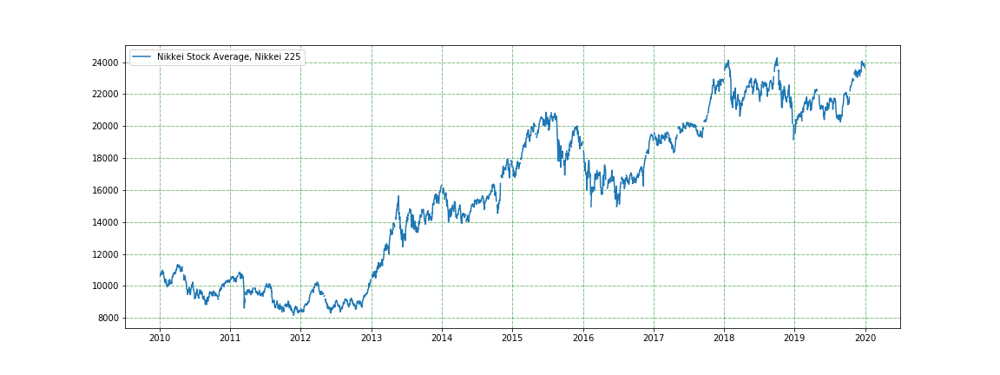
US Debt/GDP percentage plot
plot_index('GFDEGDQ188S', start_date = '1910-01-02')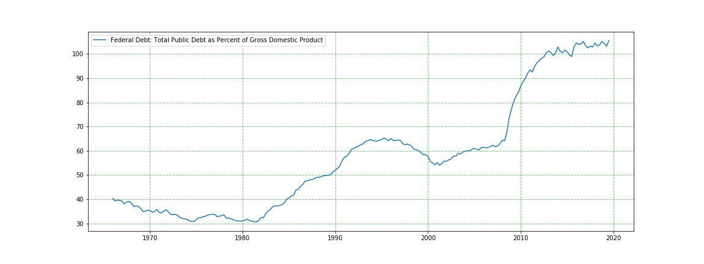
US GDP
plot_index('GDPC1', start_date = '1910-01-02')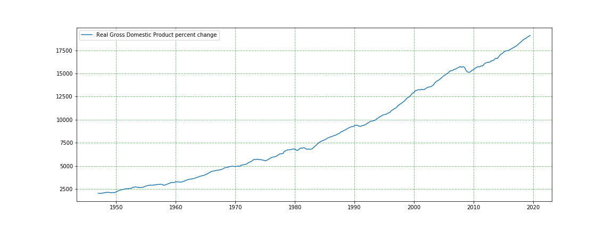
plot_index('A191RL1Q225SBEA', start_date = '2010-01-02')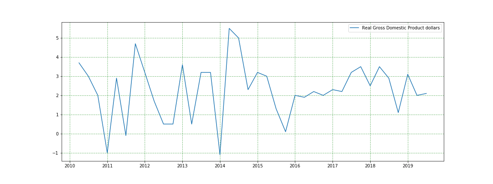
Japenese interest rate plot
plot_index('IRLTLT01JPM156N', start_date = '1940-01-02')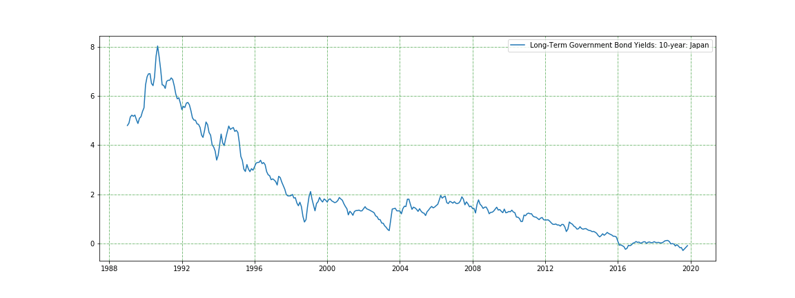
nasdaq = data.get_nasdaq_symbols()
print(nasdaq.shape)
nasdaq.head()def compute_stats(symb):
ticker = data.get_quote_yahoo(symb)
ticker['c1_marketCap_bn_calc'] = ticker['price'] * ticker['sharesOutstanding'] / 1e9
ticker['c2_marketCap_bn_orig'] = ticker['marketCap'] / 1e9
ticker['c3_price_calc'] = ticker['epsForward'] * ticker['trailingPE']
ticker['c4_earnings_bn_calc'] = ticker['epsForward'] * ticker['sharesOutstanding'] / 1e9
return tickercompute_stats(['EXPE', 'GOOG', 'MSFT', 'AAPL', 'BB', 'JNPR', 'BRK-B', 'BRK-A'])Getting historic stock dividends
get_historical_data('AAPL', start_date='2019-01-02', end_date='2019-12-31', source = 'yahoo-dividends')A summary of this code is available in this notebook.